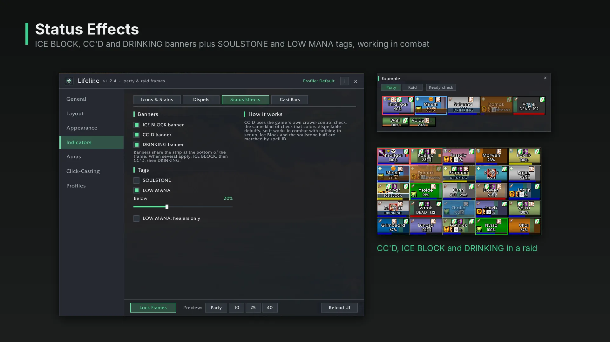
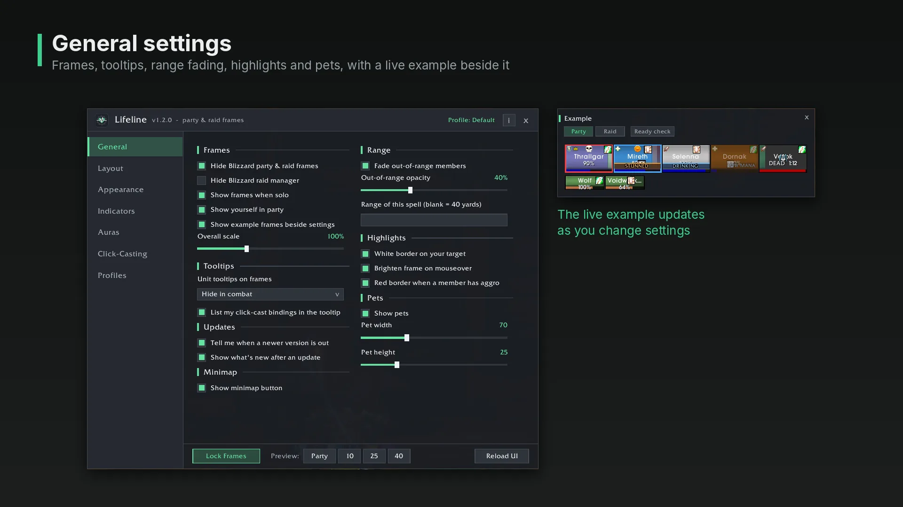
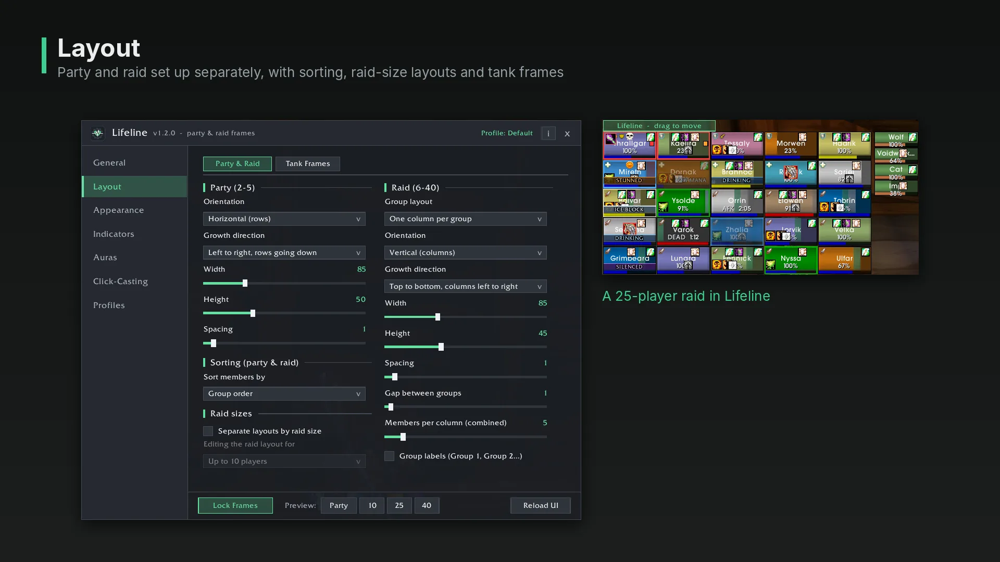
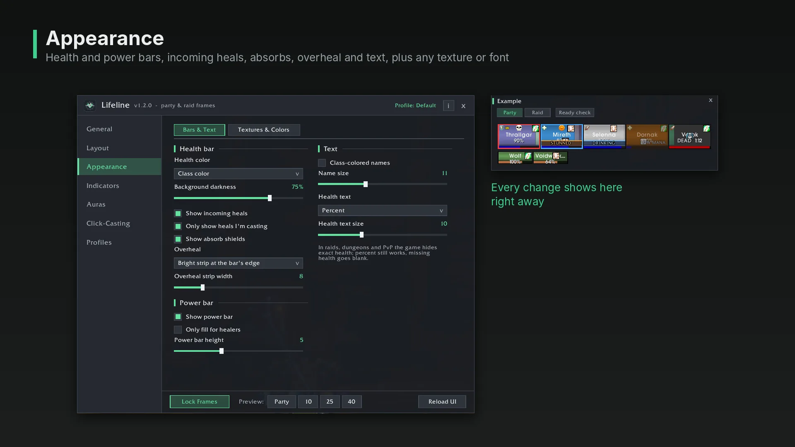
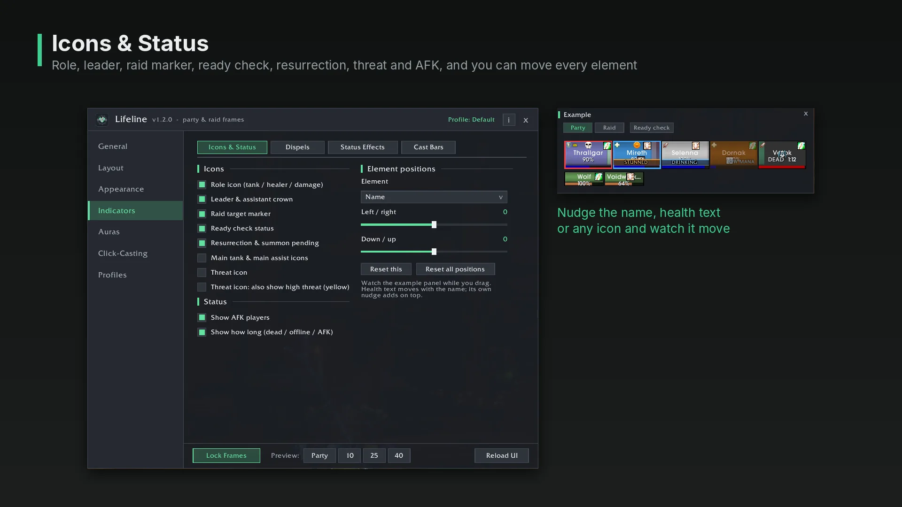
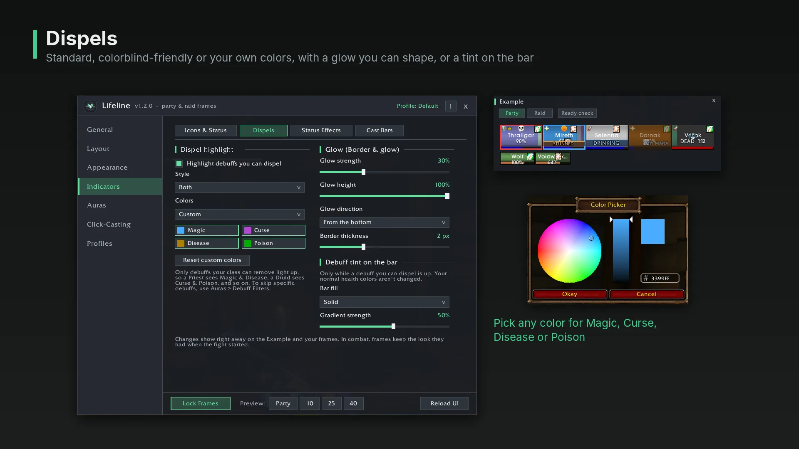
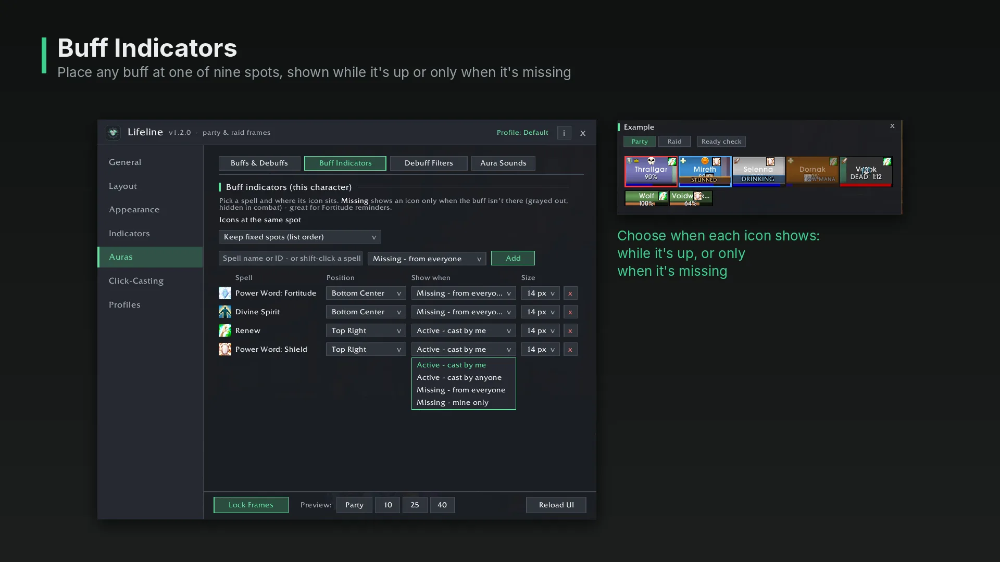
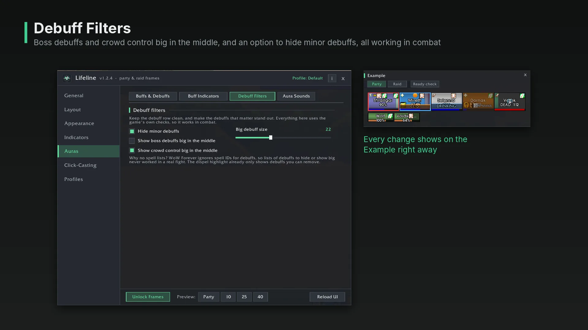
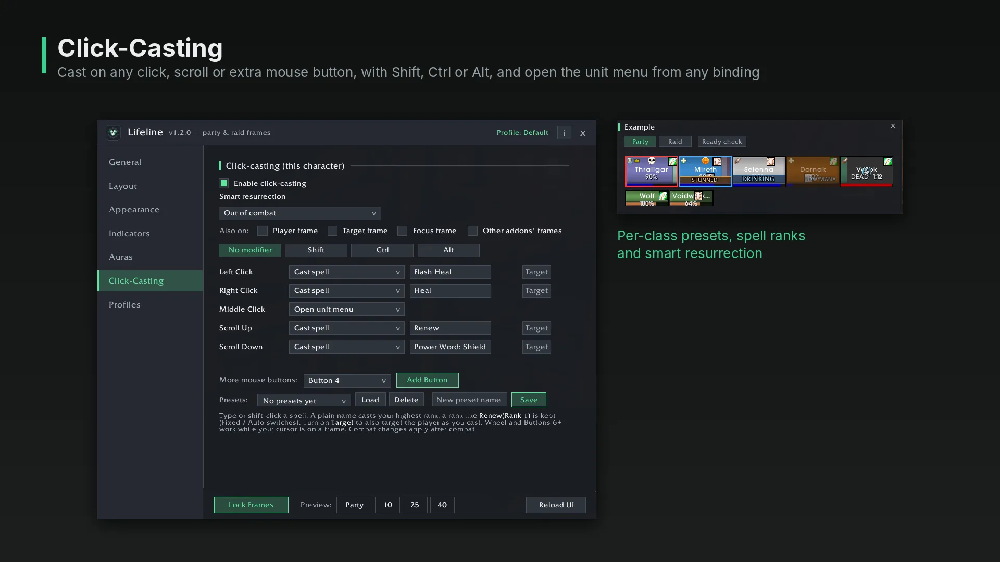
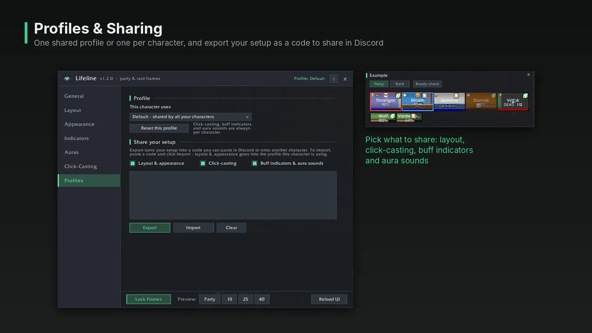

Lifeline
Clean, lightweight party and raid frames for WoW Forever, with click-casting, buff reminders and profiles.

Try it live
A simulated fight in your browser. Change the settings and watch the frames update.
Simulated in the browser to show Lifeline's options. Your in-game frames may look slightly different depending on your settings.
Features
Party & raid layouts
Party (2–5) and raid (6–40) frames, with separate 10, 20 and 40-player layouts that switch automatically, plus a movable tank group.
Healing at a glance
Incoming heals, absorb shields and overheal on class-colored, dark or single-color health bars, with out-of-range fading.
Smart dispel highlights
Only debuffs your class can remove light up, in standard, colorblind-friendly or custom colors.
Buff & debuff indicators
Buff icons in nine positions, shown while active or only when missing, plus a large center display for boss debuffs and crowd control.
Click-casting
Bind left, right, middle, scroll and mouse buttons 4–16 with Shift, Ctrl or Alt. Plain spell names cast your highest rank. Works with Clique.
Profiles you can share
Use one shared profile or per-character settings, and export your whole setup as a code to share with friends.
Screenshots



















How to install
CurseForge app
Easiest- Open the CurseForge app and pick World of Warcraft.
- Choose your WoW Forever install.
- Search for Lifeline and click Install.
- Launch the game. Updates install automatically.
Manual install
- Download the .zip from CurseForge.
- Extract the Lifeline folder.
- Move it into
Interface\AddOnsin your WoW Forever folder. - Restart the game and check it's enabled on the AddOns screen.
Commands
/ll | Open or close settings |
/ll unlock · /ll lock | Unlock or lock frames for moving |
/ll test | Toggle the preview layout |
/ll showcase | Preview with every indicator on |
/ll news | Show what's new in this version |
/ll debug | Open a copyable bug report |
/ll reset | Reset frame position |
/ll minimap | Show or hide the minimap button |
FAQ
Is Lifeline free?
Yes. All of The Forge's addons are free on CurseForge.
How do I move my frames?
Type /ll unlock, drag the green bar to where you want your frames, then type /ll lock.
I found a bug. Where do I report it?
Type /ll debug in game, copy the report it opens (Ctrl+C), and paste it into The Forge Discord.
Want test builds first?
Join The Forge to try new Lifeline features before release and shape what comes next.